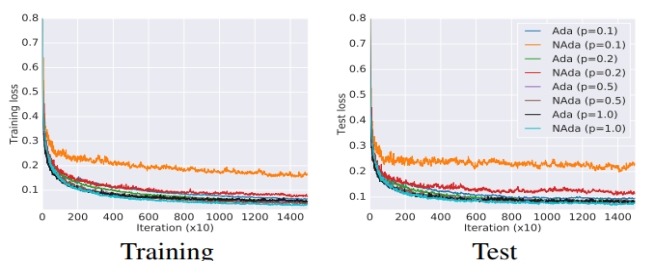
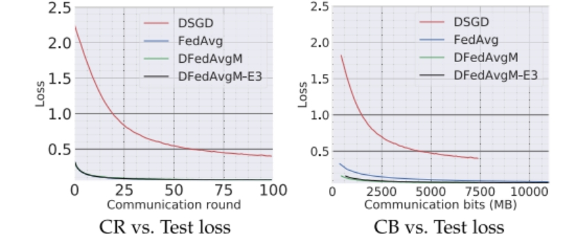
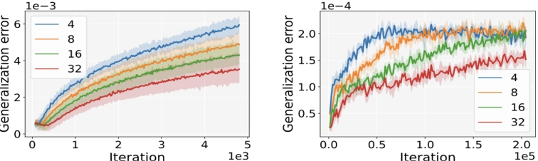

（五）智能模型分布式训练的优化算法
(1)随机游走式去中心化信息传播与优化协同
面向大规模分布式训练中全局同步代价高的现实约束，项目提出一种以随机游走为核心的信息传播方式：网络中不再依赖所有节点同时交换参数或频繁全网平均，而是让训练过程由一个在拓扑上不断移动的更新令牌驱动，令牌走到哪个节点，就由该节点完成一次局部计算并推动一次模型更新，然后把必要的训练状态沿网络边传递到下一个节点。这样一来，通信与计算被串联成更轻量、更灵活的流程：每一步只发生一次局部计算和一次邻接传输，天然适配拓扑受限、通信不稳定或难以同步的去中心化环境。

图1：自适应随机游走和非自适应随机游走比较。可以发现当稀疏程度越高时(p越小时)，自适应效果越好
在算法设计上，进一步引入了自适应学习率和动量等机制，使得每次更新能够根据历史梯度信息自动调整更新强度，从而在噪声较大或梯度分布不均匀的场景中保持稳定。在理论方面，项目证明了当梯度呈现稀疏特征时，自适应机制能够带来更明确的效率优势，给通信受限或稀疏更新场景如何加速训练提供了可解释的理论支撑。在实验层面，该方法在多种设置下展示出有效性与稳健性，表明随机游走传播并非只是一种通信技巧，而是可以与优化器设计协同带来实际收益的去中心化训练方案。
(2)去中心化联邦聚合机制
针对经典联邦学习普遍依赖中心服务器聚合带来的单点瓶颈、通信压力集中与潜在隐私风险，项目从架构层面将“服务器聚合”改造为“网络内协商聚合”：客户端之间以互连拓扑形成去中心化网络，每轮训练中，各节点先在本地执行多步模型更新，再通过与邻居节点的模型交换与平均实现群体层面的聚合效果，从而在没有中心服务器的情况下完成联邦学习的核心过程。这种范式在组织方式上更加分散，能够缓解中心节点成为性能瓶颈或故障点的问题，也更契合多机构协作、跨域节点互联、难以部署中心服务器的应用环境。

图2：去中心化联邦学习在通信方面的显著优势
在方法层面，项目进一步将动量机制引入去中心化联邦平均流程，增强训练的稳定性与收敛速度；同时，为了面向真实系统中的带宽限制，提出了量化版本，使得模型交换可以以更低通信代价完成。在理论方面，项目给出了去中心化联邦平均及其量化版本的收敛分析，说明在合理条件下其收敛性能可以对标常见的随机梯度方法与去中心化随机梯度方法。
(3)延迟 SGD 的可泛化性机理
考虑到真实深度学习训练往往很难满足一些理想化条件，项目进一步把异步训练的泛化理论推向更可用、更贴近实践的层面。针对以往分析结论偏保守、对真实任务解释力不足的问题，从新的稳定性刻画出发，给出更紧、更有指导意义的异步训练泛化结论，并显著弱化了对强光滑、梯度全局有界等假设的依赖，使得分析能够覆盖更广泛的损失形式与训练场景。

图3：在小批量情况下带动量版本的压缩算法仍然收敛
该研究工作不仅回答异步会不会有害泛化，还进一步解释了工程实践中常见但难以用旧理论解释的现象：在合适的学习率与训练策略下，适度的更新滞后并不一定导致更差的测试表现，甚至可能表现出更强的稳定性，从而缓解过拟合倾向。实验部分在典型视觉任务与自然语言任务中做了系统对比，展示不同延迟水平、不同学习率策略下训练稳定性与测试误差的变化趋势，为“复杂并行训练场景下采用组间异步更新”的可用性提供更直接的证据链。
(4)更一般条件下的异步SGD训练算法泛化界
项目系统研究了异步训练在测试性能上的可靠性来源，形成了比既有工作更贴近真实训练的稳定性与泛化理论。这项工作聚焦一个十分重要的问题：当我们为了吞吐与效率引入异步更新甚至通信隐藏时，训练到底会不会变得更不可靠，风险能否被刻画并被策略性控制。在方法上，该工作不再沿用以往分析中常见的强前提条件，而是把关键难点从“对梯度做过强上界”转向“从训练过程本身能观测到的目标函数值与优化轨迹中提炼稳定性信息”，从而建立更紧、更有解释力的泛化上界。具体而言，以平均意义下的模型稳定性为核心刻画，给出在不依赖全局利普希茨条件时仍然有效、且不会沦为空泛结论的泛化界；进一步把泛化误差拆解为可解释的组成部分，明确揭示异步延迟、模型初始化质量、样本规模与训练迭代次数分别如何影响最终的泛化表现。
项目把分析推进到了以往很难覆盖的非光滑场景：当损失函数并不满足传统意义下的光滑性时，工作用更弱的连续性条件替代强光滑假设，仍然得到与光滑情形相近的稳定性与泛化结论，从而让理论能够覆盖更广泛的训练目标与模型结构。这一点对实际系统尤其关键，因为大模型训练中常见的分段结构、正则项与裁剪策略往往会引入非光滑特征。
相关部分论文列表:
- Xiaoge Deng, Li Shen, Shengwei Li, Tao Sun, Dongsheng Li. Towards understanding the generalizability of delayed stochastic gradient descent. IEEE TPAMI 2025.
- Ping Luo, Xiaoge Deng, Ziqing Wen, Tao Sun, Dongsheng Li. BHerd: Accelerating Federated Learning by Selecting Beneficial Herd of Local Gradients. IEEE TC 2025.
- Xiaoge Deng, Tao Sun, Shengwei Li, Dongsheng Li, Xicheng Lu. Stability and generalization of asynchronous SGD: sharper bounds beyond lipschitz and smoothness. NeurIPS 2024.
- Xiaoge Deng, Tao Sun, Shengwei Li, Dongsheng Li. Stability-based generalization analysis of the asynchronous decentralized SGD. AAAI 2023.
- Tao Sun, Dongsheng Li, Bao Wang. Decentralized Federated Averaging. IEEE TPAMI 2023.
- Tao Sun, Dongsheng Li, Bao Wang. Adaptive Random Walk Gradient Descent for Decentralized Optimization. ICML 2022.